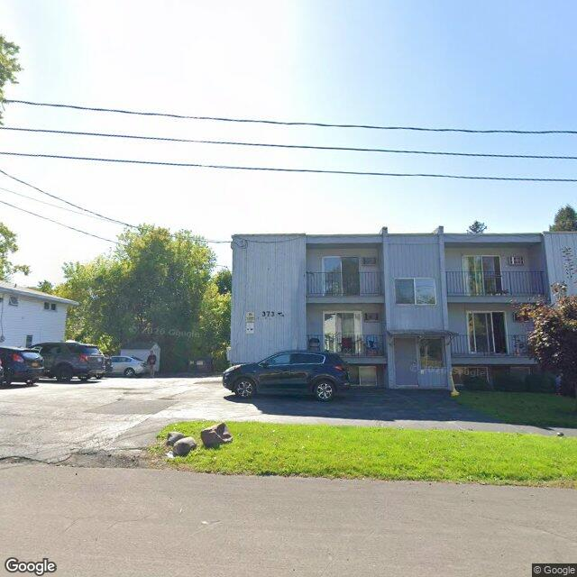

2026-07-30T07:03:19+00:00
1012 Lemoyne Ave
The image displays a two-story multi-family building with light-colored vertical siding, multiple balconies, and a paved parking area, with some minor visible exterior wear and ground debris.
Rental registry: 2 matching recordsImage-only flag: The building appears to contain more than two visible units, which may not align with 'Rental registry: 2 matching records'.Image-only flag: A visible building number '373' does not match the provided parcel address '1012 LEMOYNE AVE', suggesting a potential address discrepancy or that '373' is a unit number.
Open entry